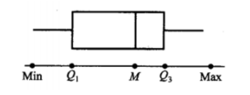

样本及抽样分布
随机样本
总体：试验的全部可能的观测值
个体：一个可能的观察值
容量：总体中包含的个体的个数
根据容量是否有限可划分有限总体和无限总体
样本：从总体中抽取若干个体观察，这部分被抽取的个体称为样本，抽取数量称为样本容量
更严谨的定义：设X是具有分布函数F的随机变量，若\(X_1,X_2,\cdots,X_n\)是具有同一分布函数F的相互独立的随机变量，则称\(X_1,X_2,\cdots,X_n\)为从分布
函数F（或总体F、或总体X）得到的容量为n的简单样本，简称样本，他们的观测值\(x_1,x_2,\cdots,x_n\)称为样本值，又被称为X的n个独立的观测值
直方图和箱线图
直方图和箱线图都是用于整理数据的工具
频率直方图：取一个包含所有数据的区间，将区间均分为n等份，每份长度称为组距\(\Delta\)，小区间的端点称为组限。然后统计落在各区间的数据个数，并在xoy平面上绘制成不同高度的等宽矩形，高度即y轴坐标等于\(\frac{f_i}{n}/\Delta\)，其中\(f_i\)为频数。当n很大时，由于频率接近于概率，因此一般来说频率直方图的外廓曲线接近于总体X的概率密度曲线
样本分位数：设有容量为n的样本观察值\(x_1,x_2,\cdots,x_n\)，样本p分位数(0<p<1)记为\(x_p\)，它具有以下性质：（1）至少有np个观察值小于或等于\(x_p\)（2）至少有n(1-p)个观察值大于或等于\(x_p\)。具体来说，若np不是整数，则样本p分位数为\(x_{([np]+1)}\)；若np是整数，则样本p分位数为\(\frac{1}{2}[x_{(np)}+x_{(np+1)}]\)。当p取0.25、0.5、0.75时，样本p分位数分别称为第一四分位数\(Q_1\)、样本中位数\(Q_2或M\)、第三四分位数\(Q_3\)
箱线图：记最大值为Max最小值为Min，具体画法如下。箱线图可以反映数据的中心位置、散布程度（区间越短越密集，越长越分散）、对称性。 
抽样分布
统计量
设\(X_1,X_2,\cdots,X_n\)是来自总体X的一个样本，\(g(X_1,X_2,\cdots,X_n)\)是\(X_1,X_2,\cdots,X_n\)的函数，若g中不含未知参数，则称\(g(X_1,X_2,\cdots,X_n)\)是一个统计量。统计量是一个随机变量
常见统计量：
- 样本均值：\(\bar X=\frac{1}{n}\sum_{i=1}^nX_i\)
- 样本方差：\(S^2=\frac{1}{n-1}\sum_{i=1}^n(X_i-\bar X)^2=\frac{1}{n-1}(\sum_{i=1}^n X_i^2 - n\bar X^2)\)
- 样本标准差：\(S=\sqrt{S^2}\)
-
样本k阶（原点）矩：\(A_k=\frac{1}{n}\sum_{i=1}^nX_i^k,k=1,2,\cdots\)
当\(n\to \infty\)时，\(A_k\overset{P}{\rightarrow}\mu_k\)
-
样本k阶中心矩：\(B_k=\frac{1}{n}\sum_{i=1}^n(X_i-\bar X)^k,k=2,3,\cdots\) 这些统计值的观测值分别记为\(\bar x,s^2,s,a_k,b_k\)，均可类似地由样本观察值算出
经验分布函数
设\(x_1,x_2\cdots,x_n\)是来自分布函数为F(x)的总体X的样本观察值的经验分布函数，记为\(F_n(x)\)，定义为样本观察值\(x_1,x_2\cdots,x_n\)中小于或等于指定值x所占的比例，即
其中\(\#(x_i\leq x)\)表示\(x_1,x_2\cdots,x_n\)中小于或等于x的个数。
不难发现\(F_n\)是分布函数。
设\(X_1,X_2\cdots,X_n\)是来自以F(x)为分布函数的总体X的样本，\(F_n(x)\)是经验分布函数，则有
其中sup是上确界的意思。 也就是说当n充分大时，经验分布函数能很好地逼近分布函数
\(\chi^2\)分布
伽马函数：
其具有以下性质：
- 对\(\alpha\geq1，\Gamma(\alpha+1)=\alpha\Gamma(\alpha)\)
- 对正整数n，\(\Gamma(n)=(n-1)!\)
- \(\Gamma(\frac{1}{2})=\pi^{\frac{1}{2}}\)
伽马分布： 若随机变量X服从参数为\(\alpha>0,\theta>0\)的伽马分布，则记为\(X\sim \Gamma(\alpha,\theta)\)，其概率密度为
若\(X\sim \Gamma(\alpha,\theta),Y\sim \Gamma(\beta,\theta)\)，则\(X+Y\sim\Gamma(\alpha+\beta,\theta)\)。这可以推广到任意多伽马分布的加和
\(\chi^2\)分布 设\(X_1,X_2,\cdots,X_n\)是来自总体N(0,1)的样本，则称统计量\(\chi^2=X_1^2+X_2^2+\cdots+X_n^2\)为服从自由度为n的\(\chi^2\)分布，记为\(\chi^2\sim\chi^2(n)\)，其概率密度为
可以发现，服从自由度为n的\(\chi^2\sim\Gamma(\frac{n}{2},2)\)
卡方分布满足可加性：若\(\chi_1^2\sim\chi^2(n_1),\chi_2^2\sim\chi^2(n_2)\)，则\(\chi_1^2+\chi_2^2\sim\chi^2(n_1+n_2)\)
卡方分布的期望为n，方差为2n。
设\(\chi_\alpha^2(n)\)是\(\chi^2(n)\)的上\(\alpha\)分位数，当n充分大时，\(\chi_\alpha^2(n)\approx\frac{1}{2}(z_\alpha+\sqrt{2n-1})^2\)，其中\(z_\alpha\)是标准正态分布的上\(\alpha\)分位数
t分布
设\(X\sim N(0,1),Y\sim \chi^2(n)\)，且X,Y相互独立，则称随机变量
服从自由度为n的t分布，或称为学生氏分布，记为\(t\sim t(n)\)，其概率密度为
t分布相对y轴对称。当n足够大时t分布近似于标准正态分布。
F分布
设\(U\sim \chi^2(n_1),V\sim \chi^2(n_2)\)，且U,V相互独立，则称随机变量
服从自由度为\((n_1,n_2)\)的F分布，记为\(F\sim F(n_1,n_2)\)，其概率密度为
可以证明\(\frac{1}{F}\sim F(n_2,n_1),F_{1-\alpha}(n_1,n_2)=\frac{1}{F_\alpha(n_2,n_1)}\)
正态总体的样本均值与样本方差的分布
设\(X_1,X_2,\cdots,X_n\)是来自正态总体\(N(\mu,\sigma^2)\)的样本，\(\bar X\)是样本均值,\(S^2\)是样本方差，则有
- \(\bar X\sim N(\mu, \sigma^2/n)\)
- \(\frac{(n-1)S^2}{\sigma^2}\sim \chi^2(n-1)\)
- 样本均值和样本方差相互独立
- \(\frac{\bar X-\mu}{S/\sqrt n}\sim t(n-1)\)
设\(X_1,X_2,\cdots,X_{n_1}\)是来自正态总体\(N(\mu_1,\sigma_1^2)\)的样本，\(Y_1,Y_2,\cdots,Y_{n_2}\)是来自正态总体\(N(\mu_2,\sigma_2^2)\)的样本，\(\bar X,\bar Y\)分别是X和Y的样本均值,\(S_1^2, S_2^2\)分别是X和Y的样本方差，则有
- \(\frac{S_1^2/S_2^2}{\sigma_1^2/\sigma_2^2}\sim F(n_1-1,n_2-1)\)
- 当\(\sigma_1^2=\sigma_2^2=\sigma^2\)时
其中\(S_w^2=\frac{(n_1-1)S_1^2+(n_2-1)S_2^2}{n_1+n_2-2},S_w=\sqrt{S_w^2}\)